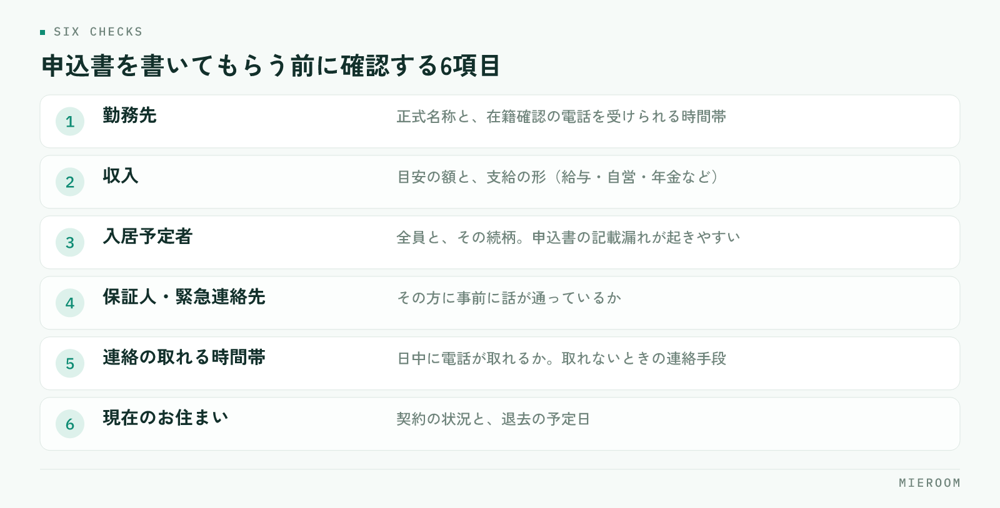

申込を出したのに審査が通らない。契約が流れるだけでなく、お客様への説明と物件の押さえ直しに時間を取られます。ただ、落ちた案件を振り返ると、申込前のヒアリングで気づけたはずの項目が含まれていることが少なくありません。この記事では、審査で見られている点と、申込前に店舗側で確認できることを整理します。
この記事の結論
入居審査は、通す・通さないを店舗が決められるものではありません。店舗にできるのは申込前に確認し、伝えるべき事情を先に添えることです。この2つで、避けられたはずの審査落ちは減らせます。
入居審査で見られている項目
審査の主体は、保証会社・貸主・管理会社です。それぞれ見る点は違いますが、共通しているのは「家賃を継続して払えるか」と「連絡が取れるか」の2点に集約されます。
具体的には、次のような項目が確認されます。
- 収入と家賃の釣り合い（月収に対して家賃が高すぎないか）
- 勤務先と勤続年数、雇用の形態
- 過去の家賃滞納の記録
- 申込内容と提出書類の整合
- 申込者本人・連帯保証人・緊急連絡先に連絡が取れるか
見落とされがちなのが最後の項目です。本人や緊急連絡先に電話がつながらないことを理由に、審査が止まるケースは珍しくありません。内容そのものに問題がなくても、確認が取れなければ先へ進みません。
保証会社の種類によって見られる点が変わる
同じ申込者でも、どの保証会社を使うかで結果が変わることがあります。審査の重心が違うためです。
| 保証会社の系統 | 審査で重く見られる点 |
|---|---|
| 信販系 | クレジットカードやローンの支払い履歴 |
| 独立系 | 収入と家賃の釣り合い、本人との連絡 |
| 協会系 | 業界内で共有される家賃の支払い履歴 |
物件ごとに使える保証会社は決まっているため、店舗側で自由に選べるわけではありません。ただし複数から選べる物件であれば、申込者の状況に合う方を先に案内できます。どの系統を使う物件なのかを、募集図面の段階で控えておくと、後の判断が早くなります。
申込前のヒアリングで確認しておくこと
申込書を書いてもらう前の会話で、次の点を確認します。詰問にならないよう、「審査をスムーズに進めるための確認です」と前置きすると伝わりやすくなります。

- 勤務先の正式名称と、在籍確認の電話を受けられる時間帯
- 収入の目安と、支給の形（給与・自営・年金など）
- 入居予定者の全員と続柄
- 連帯保証人・緊急連絡先の方に、事前に話が通っているか
- 日中に電話が取れる時間帯と、取れないときの連絡手段
- 現在のお住まいの契約状況と、退去予定日
3番目と4番目は、後から食い違いが出やすい箇所です。同居人が申込書に書かれていなかったり、緊急連絡先の方が話を聞いていなかったりすると、確認のやり取りで日数がかかります。ヒアリングの内容をその場で残す方法は反響管理のやり方でも扱っています。
在籍確認や本人確認の電話は日中にかかります。「平日の昼は出られない」と分かっていれば、申込時に伝達事項として添えられます。この一行があるだけで、審査が止まる時間が変わります。
申込書の書き方で止まるケース
内容ではなく、書き方が原因で差し戻される申込があります。店舗側で防げる部分です。
- 勤務先が略称で書かれていて、在籍確認ができない
- 年収が手取りと額面のどちらか分からない
- 電話番号の桁が足りない、旧番号のまま
- 押印や署名の漏れ、記入日の空欄
- 本人確認書類の住所が現住所と違う
差し戻しは、審査そのものより時間を奪います。申込書を預かった時点で、その場で読み返す手順を店舗のルールにしておくと、この種の止まり方は大きく減らせます。担当者が変わっても同じ確認ができるよう、項目を管理表の側に持たせておくと確実です。
事情がある場合は、先に添えて出す
収入や勤務の形に事情がある申込は、隠さずに補足資料を添えて出すのが結果的に早道です。後から確認で出てくれば、そのぶん日数がかかります。
添えられるものとして、たとえば次のようなものがあります。
- 転職直後であれば、内定通知書や雇用契約書
- 自営業であれば、確定申告書の控え
- 年金収入があれば、その内容が分かる書類
- 貯蓄で支払う前提であれば、その旨の説明
どの書類を添えれば見てもらえるかは、保証会社や管理会社によって異なります。判断に迷うときは、申込を出す前に管理会社へ一本確認を入れるのが確実です。申込前の電話1本が、数日の往復を省きます。
落ちたあとの動き方
審査が通らなかった場合、理由は原則として開示されません。店舗側から申込者へ理由を推測して伝えるのは避けてください。伝えるべきは結果と、次にできることです。
次の一手は、おおむね3つに分かれます。ひとつは、別の保証会社が使える物件へ切り替えること。ふたつめは、条件を見直して家賃帯を下げること。みっつめは、連帯保証人を立てられる物件を探すことです。
大切なのは、結果が出た当日のうちに次の物件を提示することです。時間が空くほど、お客様の来店意欲は下がります。そのためには、申込時点で第2候補まで押さえておく動き方が有効です。
審査の結果を店舗の記録として残す
審査落ちを減らす一番の材料は、自店舗の記録です。案件ごとに、どの保証会社で、どういう条件で、結果がどうだったかを残しておくと、扱う物件と客層に合った傾向が見えてきます。
残す項目は多くなくて構いません。物件名、保証会社、申込日、結果、結果が出るまでの日数、差し戻しがあればその内容。この6つがあれば、どこで時間がかかっているかは読み取れます。申込の情報をどう持たせるかは申込管理表の作り方にまとめています。
記録が溜まると、ヒアリングの段階で「この条件なら確認を丁寧にしておこう」という判断が、担当者の経験に頼らずできるようになります。
審査に落ちた理由を保証会社に聞くことはできますか
同じ物件に条件を変えて再申込できますか
申込者に事情を尋ねるとき、気をつけることはありますか
まとめ
入居審査の結果を店舗が動かすことはできません。それでも、申込前のヒアリング、申込書の読み返し、事情の先出し、結果の記録という4つの手順を持っておけば、避けられたはずの審査落ちと差し戻しは確実に減ります。どれも道具がなくても今日から始められますが、担当者ごとにばらつくと効果は続きません。
ミエルームは、申込から入金までを案件ごとに記録し、店舗の誰が見ても同じ状態が分かる形で管理できる、賃貸仲介向けの業務管理システムです。申込管理表・反響管理・接客管理を一つにまとめており、デモアカウントの発行と最短即日でのスタートに対応しています。詳しくはミエルームの製品ページをご覧ください。